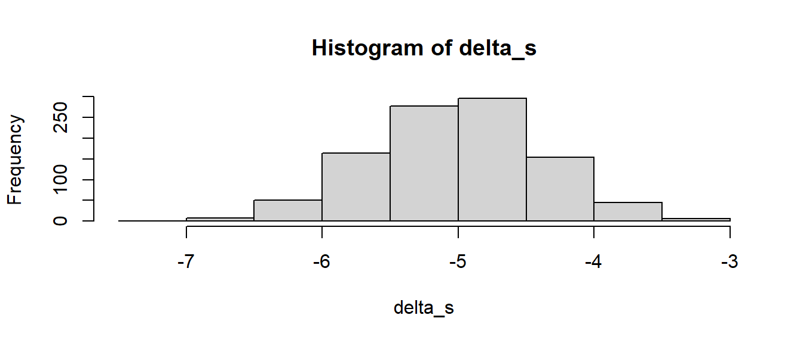

> 3 < 6[1] TRUE> 6 < 3[1] FALSE> 6 == 6[1] TRUENachdem wir die Grunddatentypen in R kennengelernt haben, schauen wir uns nun drei zentrale Konstrukte der Programmierung an. Das sind Vergleiche, darauf aufbauend bedingte Anweisungen und Verzweigungen sowie Schleifen. Fangen wir mit den Vergleichen an.
Bei Vergleichen wird zunächst einmal genau das gemacht, was im Namen drinsteht, es werden Sachen miteinander verglichen. Bei Programmieren mit R sind diese Dinge meistens Zahlen. Wenn Zahlen miteinander verglichen werden, dann kommen zunächst die aus der Schule bekannten Grundoperatoren zum Einsatz (siehe Tabelle 3.1).
| Operator | Vergleich |
|---|---|
| \(<\) | kleiner |
| \(>\) | größer |
| \(<=\) | kleiner oder gleich |
| \(>=\) | größer oder gleich |
| \(==\) | gleich |
Der einzige Vergleichsoperator, der etwas ungewohnt erscheinen dürfte, ist der Vergleich auf Gleichheit ==. Das einfache Gleichheitszeichen = ist ähnlich dem Zuweisungsoperator <-, daher wird ein weiteres Zeichen verwendet, und das ist eben das doppelte Gleichheitszeichen ==. Letztendlich ist das aber wieder nur Syntax, die sich gemerkt werden muss. Wichtiger: In R ist das Ergebnis eines Vergleichs ein logischer Wert.
> 3 < 6[1] TRUE> 6 < 3[1] FALSE> 6 == 6[1] TRUEIn allen drei Fällen sehen wir als Ergebnis der Vergleichsausdrücke einen logischen Wert. Die Vergleichsoperatoren funktionieren auch mit Vektoren.
> v_1 <- 1:6
> v_2 <- 2:7
> v_1 < 3[1] TRUE TRUE FALSE FALSE FALSE FALSE> 3 < v_1[1] FALSE FALSE FALSE TRUE TRUE TRUE> v_1 < v_2[1] TRUE TRUE TRUE TRUE TRUE TRUEWenn beide Objekte Vektoren sind, wird der Vergleich Element für Element durchgeführt, während bei einem Vergleich mit einem Skalar alle Vektorelemente mit dem Skalar verglichen werden. In beiden Fällen ist das Ergebnis des Ausdrucks wieder ein Vektor der entsprechenden Länge mit logischen Einträgen.
Zusammen mit dem Subsetting-Operator [] können wir mit relativ wenig Aufwand Werte, die eine bestimmte Bedingung erfüllen, aus einem Vektor extrahieren. Zum Beispiel aus dem Vektor v_1 alle Werte, die kleiner als \(4\) sind.
> v_1[v_1 < 4][1] 1 2 3Warum hat das funktioniert? Zuerst wird der Vergleich v_1 < 4 von R durchgeführt, der Rückgabewert dieser Operation ist ein Vektor mit logischen Werten entsprechend des Vergleichs. Der Vektor hat die Länge von v_1 und kann daher direkt dazu benutzt werden, Elemente aus v_1, die die Bedingung erfüllen, mit dem Subsetting-Operator [] zu extrahieren.
Da wir logische Werte mit den logischen Operatoren verknüpfen können, ermöglicht dies auch komplizierte Vergleiche durchzuführen.
> v_1[v_1 < 3 | v_1 > 4][1] 1 2 5 6> v_1[v_1 >= 3 & v_1 <= 4][1] 3 4Die Vergleiche können wir nun verwenden um bedingte Anweisungen zu verstehen.
In Abbildung 3.1 ist das Grundgerüst einer bedingten Anweisung bzw. Verzweigung in Form einer Grafik dargestellt.
flowchart A[condition] --> B[TRUE] A[condition] --> C[FALSE] B --> D[Ausdruck A] C --> E[Ausdruck B]
Wir haben einen Ausdruck condition, der entweder WAHR oder FALSCH sein kann, und entsprechend wird entweder Ausdruck A oder Ausdruck B ausgeführt. In condition wird üblicherweise in irgendeiner Form ein Vergleich vorgenommen.
Syntaktisch wird die bedingte Anweisung in R folgendermaßen spezifiziert.
if, gefolgt von einer Klammer mit dem Ausdruck condition, der zu einem logischen Wert (TRUE, FALSE) evaluiert wird.
condition TRUE ist, wird der AusdruckA innerhalb der geschweiften Klammern ausgeführt.
condition FALSE ist, wird der else-Zweig, bzw. der AusdruckB zwischen den geschweiften Klammern nach else ausgeführt.
Schauen wir uns ein einfaches Beispiel an:
> m <- 0
> a <- 10
> b <- 20
> if (a < b) {
+ m <- 10
+ } else {
+ m <- 20
+ }
> m[1] 10Was passiert hier? Der Wert von m wird unterschiedlich belegt, je nachdem welche Werte a und b haben. Mit diesem ifelse-Konstrukt können wir daher unterschiedliche Anweisungen in unseren Programmen ausführen lassen, abhängig von bestimmten Bedingungen. Wir könnten zum Beispiel unsere eigene Absolutfunktion schreiben.
> my_abs <- function(x) {
+ if (x < 0) {
+ -x
+ } else {
+ x
+ }
+ }
> my_abs(3)[1] 3> my_abs(0)[1] 0> my_abs(-3)[1] 3for-SchleifenAls letztes Programmierkonstrukt kommen jetzt noch Schleifen. Schleifen sind eine der Paradedisziplinen von Computern: Eine Schleife ermöglicht es, Anweisungen wiederholt auszuführen, wenn zum Beispiel eine Liste oder ein Vektor für jedes Element durchlaufen werden soll und immer wiederkehrende Anweisungen ausgeführt werden sollen.
Die Syntax für eine Schleife in R lautet:
for, gefolgt von einer Klammer. In der Klammer werden zwei Ausdrücke benötigt: Eine Variable, die hier variable heißt, fungiert als Schleifenzähler. Der Schleifenzähler durchläuft die Einträge der Variablen sequenz einen nach dem anderen. In den meisten Fällen handelt es sich hier um einen Vektor.
variable mit einem neuen Wert belegt worden ist, wird Ausdruck zwischen den geschweiften Klammern {} ausgeführt. Der jeweilige aktuelle Wert von variable steht im Ausdruck zur Verfügung. Der Code zwischen den geschweiften Klammern wird als Schleifenblock bezeichnet.
Das klingt komplizierter, als es ist. Ein einfaches Beispiel:
> for (i in 1:5) {
+ print(i)
+ }[1] 1
[1] 2
[1] 3
[1] 4
[1] 5In dem Beispiel durchläuft der Schleifenzähler i die Werte von \(1\) bis \(5\). Für den Schleifenzähler hat es sich in der Informatik eingebürgert, wenn möglich, die Bezeichner i, j oder k zu verwenden, ähnlich wie für Indexvariablen in der Mathematik. Der Vektor hätte auch in Form einer Variablen vorliegen können.
> s <- 1:5
> for (i in s) {
+ print(i)
+ }[1] 1
[1] 2
[1] 3
[1] 4
[1] 5Schauen wir uns das Beispiel noch etwas kleinteiliger an. Im nächsten Beispiel wird die cat()-Funktion verwendet, um Werte auf der Kommandozeile auszugeben. Das Zeichen \n ist lediglich ein Sonderzeichen für eine neue Zeile, damit die Ausgaben untereinander und nicht nebeneinander stehen.
> for (i in 1:5) {
+ cat('Schleifenkörper wird ausgeführt\n')
+ cat('Schleifenzähler i =', i, '\n')
+ }Schleifenkörper wird ausgeführt
Schleifenzähler i = 1
Schleifenkörper wird ausgeführt
Schleifenzähler i = 2
Schleifenkörper wird ausgeführt
Schleifenzähler i = 3
Schleifenkörper wird ausgeführt
Schleifenzähler i = 4
Schleifenkörper wird ausgeführt
Schleifenzähler i = 5 Was passiert in dem Code? Wir haben einen Vektor mit den Elementen \(1,2,\ldots ,5\). Der Schleifenzähler hat den Bezeichner i. i wird Element für Element mit den Einträgen aus dem Vektor belegt, und jedes Mal wird der Ausdruck zwischen den Klammern ausgeführt.
Ein weiteres Beispiel könnte den Vektor als Index für die Einträge in einen anderen Vektor mit Elementen verwenden. Sei ein Vektor mit den Zeichenketten "mama", "papa", "daughter" und "son" gegeben, und diese Werte sollen der Reihe nach ausgegeben werden. D.h. es soll durch die Werte iteriert werden. Dies könnte zu folgendem Programm führen.
> vec <- c('mama','papa','daughter','son')
> for (i in 1:4) {
+ cat('Ausdruck wird ausgeführt\n')
+ cat('i =', i, ': ', vec[i], '\n')
+ }Ausdruck wird ausgeführt
i = 1 : mama
Ausdruck wird ausgeführt
i = 2 : papa
Ausdruck wird ausgeführt
i = 3 : daughter
Ausdruck wird ausgeführt
i = 4 : son Da der Vektor vec ebenfalls ein Vektor ist, nur eben mit Zeichenketten, könnten wir auch direkt:
> for (i in vec) {
+ cat('Ausdruck wird ausgeführt\n')
+ cat('i =', i, '\n')
+ }Ausdruck wird ausgeführt
i = mama
Ausdruck wird ausgeführt
i = papa
Ausdruck wird ausgeführt
i = daughter
Ausdruck wird ausgeführt
i = son Beispiel 3.1 Sei der folgende Anwendungsfall gegeben: Wir haben Daten von drei Sprüngen bezüglich der vertikalen Höhe des COM und wollen aus den drei Kurven jeweils die maximale Höhe extrahieren. Seien die folgenden drei Kurven gegeben, die wir alle in einer Liste hinterlegt haben.
> com_kurven <- list(s1 = c(1,2,3,2,1),
+ s2 = c(1,2,3,4,3,2,1),
+ s3 = c(1,1,2,5,4,3,2,1))Wir verwenden hier nur sehr “übersichtliche” Kurven, um uns auf das Programm konzentrieren zu können. Da die Signale in einer Liste hinterlegt sind, können wir durch die einzelnen Elemente mittels des [[]]-Operators iterieren. Wir definieren zunächst einen Vektor, der die Maximalhöhen aufnimmt, die wir mittels der max()-Funktion bestimmen. Mit einer for-Schleife führen wir die Iteration durch.
> com_max_hoehen <- numeric(3)
> for (i in 1:3) {
+ com_max_hoehen[i] <- max(com_kurven[[i]])
+ }
> com_max_hoehen[1] 3 4 5Tatsächlich ist die Anwendung der for-Schleifen seltener als in anderen Programmiersprachen, da für viele Anweisungen vektorisierte Funktionen zur Verfügung stehen. D.h., soll ein Vektor von Werten bearbeitet werden, dann arbeitet eine vektorisierte Funktion alle Elemente gleichzeitig ab und ist dabei meistens noch schneller. Im Hintergrund kann dann zwar immer noch eine for-Schleife zur Anwendung kommen, dies ist jedoch für die Benutzerin transparent. Ein Beispiel könnte ein Vektor mit Zeichenketten sein, von denen nur immer der letzte Buchstabe benötigt wird.
> vec <- c("P1","P2","P3")
> vec[1] "P1" "P2" "P3"Dies könnte wieder mit einer for-Schleife und der substr()-Funktion erreicht werden.
> for (s in vec) {
+ print(substr(s, 2, 3))
+ }[1] "1"
[1] "2"
[1] "3"Die substr()-Funktion ist jedoch vektorisiert und kann direkt auf Zeichenkettenvektoren arbeiten. Daher wird mit der folgenden Anweisung das gleiche Ergebnis erreicht.
> substr(vec, 1, 3)[1] "P1" "P2" "P3"Diese Lösung hat auch noch den Vorteil, dass das Ergebnis direkt als Vektor vorliegt.
Bevor größere Programme mit for-Schleifen erstellt werden, ist es meistens sinnvoll, zunächst nach vektorisierten Lösungen zu schauen, da diese meistens schneller laufen und zu deutlich einfacher zu verstehenden Programmen führen.
Insgesamt ist eine for-Schleife ein Programmierkonstrukt, das immer wieder auftritt und daher bekannt sein sollte.
forZur Vertiefung schauen wir uns ein längeres Beispiel für eine for-Schleife an.
Problemstellung: Wir wollen eine Abschätzung darüber treffen, welche Unterschiede zwischen zwei Gruppen zu erwarten sind bei unterschiedlichen Treatments. Die Gruppen haben beide eine Größe von ( n_1 = n_2 = n = 20 ). Aus der Literatur wissen wir, dass die Gruppe unter Treatment 1 einen Mittelwert von ( _1 = 10 ), während unter Treatment 2 im Mittel ein Wert von ( _2 = 15 ) zu erwarten ist. Das Beispiel ist abstrakt, aber die Mittelwerte könnten zum Beispiel Weiten beim Medizinballwurf repräsentieren. Wir wollen jetzt abschätzen, welchen Unterschied wir zwischen den Gruppen erwarten würden, wenn beide Gruppen eine Standardabweichung von ( = 2 ) aufweisen. D.h. wir definieren uns erst einmal die Randwerte unserer Simulation.
> n <- 20
> mu_1 <- 10
> mu_2 <- 15
> sigma <- 2Die Werte in den Gruppen folgen einer Normalverteilung. In R können wir Zufallsstichproben der Größe ( n ) aus einer Normalverteilung mit Mittelwert ( ) und Standardabweichung ( ) mittels der Funktion rnorm(n, mu, sigma) erzeugen. D.h. ein Durchgang der Simulation würde wie folgt aussehen.
> stichprobe_1 <- rnorm(n, mu_1, sigma)
> stichprobe_2 <- rnorm(n, mu_2, sigma)
> delta <- mean(stichprobe_1) - mean(stichprobe_2)
> delta[1] -5.351058Nun wollen wir diese Simulation nicht nur einmal, sondern ganz oft, z.B. ( n_{} = 1000 ) wiederholen, um eine realistische Abschätzung über die zu erwartenden Werte zu bekommen. Dafür setzen wir eine for-Schleife ein.
> n_sim <- 1000
> for (i in 1:n_sim) {
+ stichprobe_1 <- rnorm(n, mu_1, sigma)
+ stichprobe_2 <- rnorm(n, mu_2, sigma)
+ delta <- mean(stichprobe_1) - mean(stichprobe_2)
+ }Jetzt ergibt sich das Problem, dass wir noch einen Platz brauchen, um die jeweiligen Ergebnisse abzuspeichern. Dafür wird ein Vektor erstellt, der ausreichend bzw. genau so viele Einträge wie abzuspeichernde Werte hat. Mit der Funktion numeric(n) können wir einen numerischen Vektor der Länge n erstellen, der nur ( 0 ) als Einträge hat. Kombiniert mit unserem Programm ergibt sich:
> n_sim <- 1000
> delta_s <- numeric(n_sim)
> for (i in 1:n_sim) {
+ stichprobe_1 <- rnorm(n, mu_1, sigma)
+ stichprobe_2 <- rnorm(n, mu_2, sigma)
+ delta_s[i] <- mean(stichprobe_1) - mean(stichprobe_2)
+ }Jetzt sind alle Zwischenergebnisse in dem Vektor delta_s gespeichert, und wir können uns die Verteilung der Unterschiede z.B. mit Hilfe eines Histogramms anschauen.
> hist(delta_s)
Wenig überraschend sind Unterschiede in den Mittelwerten um (-5) Einheiten, aber es treten auch Unterschiede von (-7) und (-3) auf.
replicate()Eine weitere Möglichkeit, R eine Gruppe von Anweisungen wiederholt durchführen zu lassen, kann mittels der Funktion replicate() erreicht werden. In den meisten Fällen wird replicate() verwendet, um eine Simulation durchzuführen. D.h. das Beispiel von eben könnte ebenfalls mittels replicate() programmiert werden. replicate() hat zwei Hauptargumente. Das erste n bestimmt die Anzahl der Wiederholungen, während das zweite Argument eine Anweisung ist, in den meisten Fällen eine Funktion.
Nehmen wir als Anwendungsfall, dass wir wiederholt Mittelwerte ( {x} ) aus einer Zufallsstichprobe erzeugen wollen. Wir ziehen beispielsweise eine Stichprobe von ( n = 20 ) Werten aus einer Normalverteilung mit den Parametern ( = 3, = 0.7 ). Und wir wollen uns die Stichprobenverteilung der Mittelwerte ansehen. Wir beginnen mit einem einfachen Proof-of-Concept.
> mu <- 3
> sigma <- 0.7
> n <- 20
>
> x_bar <- mean(rnorm(n, mu, sigma))
> cat('Der beobachtete Mittelwert ist: ', x_bar, '\n')Der beobachtete Mittelwert ist: 2.913401 Sollen die Anweisungen nun nicht nur einmal, sondern wie im vorherigen Beispiel für die for-Schleife 1000-mal durchgeführt werden, dann müssen die Anweisungen in Form einer eigenen Funktion gebündelt werden (die Syntax für die Definition einer Funktion ist wahrscheinlich etwas undurchsichtig und wird erst im nächsten Kapitel genauer erklärt).
> x_bar_func <- function(n = 20, mu = 3, sigma = 0.7) {
+ mean(rnorm(n, mu, sigma))
+ }Mit dieser Anweisung wird eine neue Funktion x_bar_func() definiert. Diese Funktion kann nun wie jede andere Funktion in R aufgerufen werden. Wenn x_bar_func() ausgeführt wird, erhalten wir wie oben einen zufälligen Mittelwert aus einer Stichprobe der Größe ( n = 20 ) aus der Normalverteilung ( (3, 0.7) ).
> x_bar_func()[1] 2.992226Die Funktion x_bar_func() kann nun an replicate() als zweites Argument übergeben werden, während mit dem ersten Argument die Anzahl der Wiederholungen spezifiziert wird. Starten wir erst einmal nur mit ( N_{} = 5 ) Wiederholungen, um den Überblick zu behalten.
> N_sim <- 5
> replicate(N_sim, x_bar_func())[1] 2.957509 2.996649 2.969961 3.136574 2.928508Als Rückgabewert von replicate() erhalten wir einen Vektor, dessen Elemente die einzelnen Rückgabewerte der Aufrufe von x_bar_func() sind. Dieser Vektor mit den Rückgabewerten kann nun ganz normal an eine Variable zugewiesen werden. Mittels der Variable kann dann zum Beispiel ein Histogramm der Mittelwerte erzeugt werden.
> N_sim <- 100
> x_bar_s <- replicate(N_sim, x_bar_func())
> hist(x_bar_s)In Abbildung 3.2 ist zu erkennen, dass der Großteil der Mittelwerte um den Wert 3 schwankt, was auch den Erwartungen entspricht, da wir Stichproben aus einer Normalverteilung mit dem Mittelwert ( = 3 ) ziehen.
Zusammenfassend lässt sich zur Verwendung von replicate() sagen, dass zunächst eine Funktion mit den benötigten Anweisungen definiert werden muss und diese dann an replicate() übergeben wird. Der Vollständigkeit halber eine Ausführung mit einer for-Schleife:
> x_bar_s2 <- numeric(N_sim)
> for (i in 1:N_sim) {
+ x_bar_s2[i] <- x_bar_func()
+ }
> hist(x_bar_s2)
Das Programm ist zwar nicht viel länger, aber es muss explizit die Zuweisung der Ergebnisse gehandhabt werden. Dies übernimmt replicate() automatisch.
Wenn wiederholte Anweisungen durchgeführt werden sollen und die Schleifenvariable nicht explizit benötigt wird, dann bietet replicate() eine gute Alternative zu for-Schleifen.